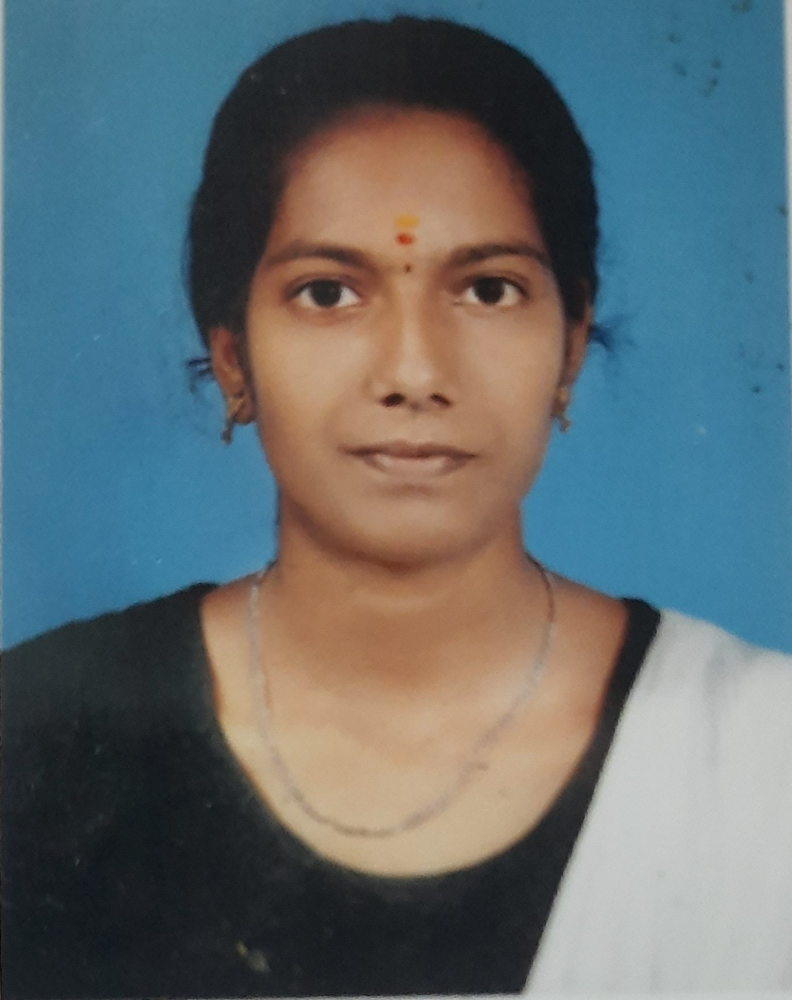

Frontend Development
Responsive interfaces and clean, accessible layouts.
Hello, I'm ✦
Computer Science Engineer crafting responsive web experiences, with hands-on experience in US Healthcare Revenue Cycle Management.

I'm Emaan S, a Computer Science Engineering graduate interested in software development and modern web technologies. I enjoy building responsive interfaces and exploring ways technology can solve everyday problems.
My background also includes six months of US Healthcare AR Calling experience, strengthening my communication, documentation, follow-up, and problem-solving skills.
Explore my work ↗Technologies and concepts I have worked with.
Responsive interfaces and clean, accessible layouts.
Programming fundamentals and practical problem-solving.
Working knowledge of databases and development workflows.
Skills strengthened through project work and healthcare operations.
Global Healthcare Billing Partners · US Healthcare RCM
VEBBOX Software Solutions · Kumbakonam
Real projects from my resume, not placeholder case studies.
Designed and developed a responsive music player website using HTML and CSS, focusing on interface structure and usability.
View Live Project ↗Developed a machine-learning-based academic project exploring blood group classification from fingerprint features.
Demo / repository link not providedAnnai College of Engineering & Technology
CGPA:8.04Recognized at zone level; an experience that developed teamwork and leadership.
Designed and developed responsive websites using HTML, CSS, and JavaScript.
Tamil · English
Open to entry-level software, web development, and relevant healthcare RCM opportunities.